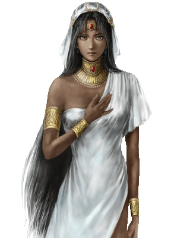

海員
格尔哈特·阿迪肯
查理·约翰·洛雪弗
曼努埃尔·阿尔米达
行久·玄丞·白木大阪
乙凤·宋京城 廣場
尤里安·罗佩斯杭州 酒館 觸發劇情 京城 酒館 觸發劇情 進入 京城 遺跡 回到 杭州 酒館
科鲁罗·西奈特馬六甲 交易所
詹姆·杰克·鲁德韦雅加達 旅館 觸發劇情 雅加達 酒館 觸發劇情
阿尔·菲利德·西恩查理 在主艦 巴斯拉 酒館
塞维·达·汉卡里亥特 廣場
塞拉·阿尔特斯·夏尔巴拉兹 專屬  初入非洲 任意港口外 觸發劇情 任意選擇 劇情後 戰鬥 無論勝負 加入
易安·杜可夫索法拉 酒館
米哈易尔·勒茨塞拉 在主艦 東非港口 廣場
杰拿斯·帕沙里斯本 選擇 給錢(第一個選項)
埃米利奥·菲隆塞維利亞
弗利奥·埃涅科熱那亞 酒館
安杰洛·普契尼伊斯坦堡 碼頭
铁礼列·滕尼亞歷山大 碼頭
克丽丝汀娜·埃涅科-弗利奥塞拉 弗利奥 在主艦 在 北海 任意港口 出港 得知 美人在倫敦 前往 倫敦 加入之
费南德·迪阿斯委拉克路斯 酒館 遊戲 勝利 拋硬幣 為正面 加入
東亞
北緯27 東經129 竹藝品的組合說明書： 到杭州 華梅 請求 滅倭(要先滅掉 東南亞的 庫恩) 幹掉 倭奴 回到杭州 獲取之 唐代的竹藝品： 送禮物給大阪 酒館女孩 出現遺跡 進入遺跡 到 泉州 廣場 觸發劇情(要先獲得 非洲 霸者之證) 尋早 忽必烈 大刀 回到 大阪遺跡 得知 消息 到 中國最東北的村莊 獲取之 (北海道 北緯42 東經141) (科爾夫 北緯60 東經165) 消滅 倭奴後 到長崎 船產 可獲得二層甲板
印度洋
北緯22 東經90 不枯萎的蓮葉： 到 卡利亥特 得到之 貴霜朝的大盤： 印度 伊斯蘭邪教 發來戰書開戰後 瑞典國王 召見 回到 瑞典 國王要求 討伐 海盜 易斯卡 幹掉之 獲取之 到 卡利亥特工會 接到任務 要求 幹掉 海盜 雅克布 幹掉之 出現遺跡 進入 得到大鹫像 達到 安曼後 塞拉將離開
非洲
南幃27 東經32 神秘石板下半部： 幹掉 埃斯皮諾 在索法拉 接到任務 去北海冰島 尋找 斧槍(北緯64 西經15) 找到 斧槍 返回索法拉 得到之 神秘石板上半部： 勢力達到一定值 1200 在 聖喬治 接任務 去地中海 抓 海盜朱利安 幹掉之 回到 聖喬治 工會 出現 遺跡 進入之 得到之
地中海
北緯38 東經36 黃銅製的煤油燈： 獲取東亞 霸者之證後 在 東南亞 印度洋 得知 奧斯曼 大舉經 來到印度洋 得知 國王 要求 幹掉 伊斯蘭邪教 捍衛 基督教邪教 到亞歷山大 送禮物給 酒吧女 出現遺跡 帶 1硫磺(伊斯坦堡) 5木材(北魯特) 10硝石(印度洋) 進入遺跡 獲取之 畫有圖案的布： 在 伊斯坦堡 得知 亞歷山大有人尋找 到亞歷山大 遇見 巴夏軍 攻擊 幹掉之/逃跑之 進港 聽說 海雷丁 戰敗 之後 與塞拉 重逢 到 伊斯坦堡 出現新城市 去新城 為去買5個 洋槍 消滅 伊斯蘭 巴夏軍 進入 亞歷山大 遺跡 獲取之